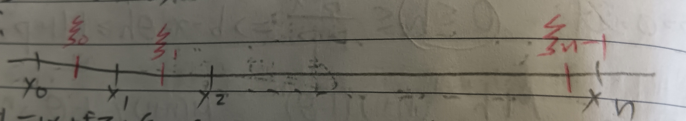

這份筆記是關於泰勒級數的收斂性與插值多項式。
泰勒級數的適用性
定理 1
給定定義在\([a,b]\)上的函數\(f(x)\)。若對所有\(n\in\mathbb{N}\)與\(x\in(a,b)\)有\(f^{(n)}(x)\geq 0\)，則當\(|h|\leq b-x\)時，有 \[
f(x+h)=\sum_{k=0}^\infty\frac{f^{(k)}(x)}{k!}h^k
\] 即函數值會等於泰勒級數值。
證明：我們需要說明當\(n\to\infty\)時，剩餘項\(R_n\to 0\)。已知 \[
f(b)-f(a)=\int_a^b f'(t)dt\geq\int_x^{x+h}f'(t)dt
\] 令\(f(b)-f(a)=M\)，則\(M\geq f(x+h)-f(x)\) (\(f'(x)\)恆大於零，\(f(x)\)嚴格遞增)。
而把\(f\)寫泰勒級數，有 \[
f(x+h)-f(x)=hf'(x)+\frac{1}{2!}f''(x)h^2+\cdots+\frac{1}{n!}f^{(n)}h^n+R_n
\] 故 \[
0\leq\frac{f^{(n)}(x)}{n!}\leq\frac{M}{h^n}\leq\frac{M}{(b-x)^n}\mbox{
(☆)}
\] 使用柯西形式的\(R_n\)(這裡的定理10)，則
\[
0\leq R_n=\frac{(1-\theta)^n}{n!}h^{n+1}f^{(n+1)}(x+\theta
h)\leq\frac{(1-\theta)^n(n+1)Mh^{n+1}}{(b-x-\theta h)^{n+1}}
\] \(h\geq 0\)時，選擇\(p>0\) s.t. \(0\leq h\leq\frac{b-x}{1+p}\)，則\(b-x-\theta h\geq h(1+p-\theta)\)。故 \[
0\leq
R_n\leq\frac{Mh^{n+1}(n+1)(1+\theta)^n}{h^{n+1}(1-p-\theta)^{n+1}}\leq\frac{M(n+1)}{1+p-\theta}\left(\frac{1-\theta}{1-\theta+p}\right)^n\to
0
\] (最後是因為\(1-\theta<1-\theta+p\))。故\(h\geq 0\)時\(R_n\to 0\)。
而\(h<0\)時，使用拉格朗日形式的\(R_n\)(這裡的定理11)，則 \[ R_n=\frac{h^n}{(n+1)!}f^{(n+1)}(x+\theta h) \] 則 \[ \begin{aligned} |R_n|&=\frac{|h|^n}{(n+1)!}\left|f^{(n+1)}(x-\theta|h|)\right|\\ &\leq\frac{|h|^n}{(n+1)!}f^{(n+1)}(x)\\ &\mbox{(因為}f^{(n+1)}\geq 0\mbox{且}f^{(n+2)}\geq 0\mbox{)}\\ &\leq\frac{|h|^n}{(b-x)^n}M\to 0 \end{aligned} \] 最後一步是因為上式(☆)中的\(\frac{f^{(n)}(x)}{n!}\leq\frac{M}{(b-x)^n}\)其實與\(h\)無關，找一個\(h>0\)證明此不等式後就能把\(h\)丟掉了。QED
推論 1-1
定理1中其實只要存在某個\(k\)使得\(n\geq k\)時都有\(f^{(n)}(x)\geq 0\)就好。
證明：考慮\(g(x)=f(x)+M(x-a+1)^k\)，我們希望說明當\(M\)夠大時總有\(g^{(n)}(x)\geq 0, \forall n\)。
我們知道當\(n\geq k\)時，若\(M\)夠大則\(g^{(n)}(x)\geq 0\)(因為\(n\geq k\)，故\(M(x-a+1)^k\)微分\(n\)次後是常數)。而當\(n<k\)時， \[
g^{(n)}(x)=f^{(n)}(x)+Mk(k-1)(k-2)\cdots(k-n+1)(x-a+1)^{k-n}
\] 因為\(Mk(k-1)(k-2)\cdots(k-n+1)(x-a+1)^{k-n}\)在\([a,b]\)上是正的，故當\(M\)夠大時會有\(g^{(n)}(x)\geq 0\)。於是由定理1可知\(g\)會等於自己的泰勒級數，而\(M(x-a+1)^k\)也會等於自己的泰勒級數，故\(f\)的函數值等於泰勒級數值。QED
插值多項式
定義 2：插值多項式 (Interpolation Polynomial)
我們希望用多項式\(\phi\)逼近函數\(f\)。給定\(x_0,x_1,\cdots,x_n\)和\(f_0=f(x_0),f_1=f(x_1),\cdots,f_n=f(x_n)\)。則使得\(\phi(x_i)=f_i,\forall i=0\sim n\)的多項式，稱為插值多項式。
我們希望可以針對一個函數，找出其插值多項式。
引理 2-1：廣義羅爾定理 (Generalized Rolle's Theorem)
若\(f\)是\(n\)次可微的，且給定\(x_0,x_1,\cdots,x_n\)有\(f(x_i)=0,\forall i=0\sim n\)。則存在\(\xi\) s.t. \(f^{(n)}(\xi)=0\)。
證明：由羅爾定理(這裡的引理4-1)，可以找到\(\xi_0,\xi_1,\cdots,\xi_{n-1}\) s.t. \(f'(\xi_0)=f'(\xi_1)=\cdots=f'(\xi_{n-1})=0\)(見下圖1)。重複此步驟，即有\(\xi\) s.t. \(f^{(n)}(\xi)=0\)。QED
引理 2-2
定義2中的\(\phi\)是唯一的。
證明：令\(\phi_1, \phi_2\)都是所求的插值多項式，令
\[
D(x)=\phi_1(x)-\phi_2(x)=a_nx^n+a_{n-1}x^{n-1}+\cdots+a_0
\] 易知\(\forall i=0\sim
n\)有\(D(x_i)=0\)，則由廣義羅爾定理，存在\(\xi\)使得\(D^{(n)}(\xi)=0\)。但\(D^{(n)}(x)\equiv n!a_n\)，故\(a_n=0\)。同理重複，會有\(a_i=0,\forall i=0\sim n\)。即\(D(x)\equiv 0\), \(\phi_1\equiv\phi_2\)。QED
回到原本的問題，考慮\(\phi_1(x)=f_0+A_1(x-x_0)\)。可以決定\(A_1\) s.t. \(\phi_1(x_0)=f_0\), \(\phi_1(x_1)=f_1\)。
然後考慮\(\phi_2(x)=\phi_1(x)+A_2(x-x_0)(x-x_1)\)，可以決定\(A_2\) s.t. \(\phi_2(x_2)=f_2\)。
類似的，可以令
\[
\phi(x)=A_0+A_1(x-x_0)+A_2(x-x_0)(x-x_1)+\cdots+A_{n-1}(x-x_0)(x-x_1)\cdots(x-x_{n-1})
\] 可以找到\(A_0,A_1,\cdots,A_{n-1}\)符合插值多項式的要求。
特別的，令相鄰的兩個\(x_i\)都等距 i.e.
\(x_i=x_{i-1}+h\), \(\forall i=1\sim n\)。則 \[
\begin{aligned}
f_0&=A_0\\
f_1&=A_0+hA_1\\
f_2&=A_0+2hA_1+2!h^2A_2\\
&\vdots\\
f_n&=A_0+nhA_1+n(n-1)h^2A_2+\cdots+n!h^nA^n
\end{aligned}
\] 再者，令 \[
\begin{aligned}
&\Delta f_0=f_1, \Delta f_1=f_2-f_1\\
&\Delta^2 f_0=\Delta f_1-\Delta f_0, \Delta^2 f_1=\Delta f_2-\Delta
f_1\\
&\vdots\\
&\Delta^k f^i=\Delta^{k-1}f_{i+1}-\Delta^{k-1}f_i\\
&\vdots
\end{aligned}
\] 稍微整理一下，會有 \[
\Delta^n f_k=f_{k+n}-C^n_1f_{k+n-1}+C^n_2f_{k+n-2}+\cdots+(-1)^nf_k
\] 則由數學歸納法可以推出 \[
A_n=\frac{1}{n!}h^{-n}\Delta^n f_0
\] 然後令\(\xi=\frac{1}{h}(x-x_0)\)，則\(x-x_r=h(\xi-r)\)，即 \[
\begin{aligned}
&(x-x_0)(x-x_1)\cdots(x-x_n)=\xi(\xi-1)(\xi-2)\cdots(\xi-n)h^{n+1}\\
\Rightarrow&\phi(x_0+\xi h)=f_0+C^\xi_1\Delta f_0+C^\xi_2\Delta^2
f_0+\cdots+C^\xi_n\Delta^n f_0
\end{aligned}
\] 其中 \[
C^\xi_k=\frac{\xi(\xi-1)\cdots(\xi-k+1)}{k!}, \xi\in\mathbb{R}
\] 而我們知道 \[
\begin{aligned}
\lim_{h\to 0}h^kC^\xi_k&=\lim_{h\to
0}h^k\frac{\xi(\xi-1)\cdots(\xi-k+1)}{k!}\\
&=\lim_{h\to 0}h^k\frac{(x-x_0)(x-x_1)\cdots(x-x_{k-1})}{k!h^k}\\
&=\frac{(x-x_0)^k}{k!}
\end{aligned}
\] (當\(h\to 0\)時，\(x-x_k\to x-x_0\), \(\forall k\))。故我們可以把\(\phi\)寫成 \[
\phi(x_0+\xi h)=f_0+c^\xi_1h\times\frac{\Delta
f_0}{h}+C^\xi_2h^2\times\frac{\Delta^2
f_0}{h^2}+\cdots+C^\xi_nh^n\times\frac{\Delta^n f_0}{h^n}
\] 當\(h\)很小時，有 \[
\phi(x_0+\xi h)=f_0+(x-x_0)\frac{\Delta
f_0}{h}+\frac{(x-x_0)^2}{2!}\times\frac{\Delta^2f_0}{h^2}+\cdots+\frac{(x-x_0)^n}{n!}\times\frac{\Delta^n
f_0}{h^n}
\] 接著我們需要一件事：
引理 2-3
\[ \lim_{h\to 0}\frac{\Delta^n f_0}{h^n}=f^{(n)}(x_0) \]
證明：這件事可以用數學歸納法說明，這裡只說明\(n=2\)的狀況： \[
\frac{\Delta^2
f_0}{h^2}=\frac{f_2-2f_1-f_0}{h^2}=\frac{f(x_0+2h)-2f(x_0+h)+f(x_0)}{h^2}
\] 由泰勒定理， \[
\begin{aligned}
&f(x_0+h)=f(x_0)+f'(x_0)h+f''(x_0)\frac{h^2}{2}+o(h^2)\\
&f(x_0+2h)=f(x_0)+f'(x_0)\times 2h+f''(x_0)\times
2h^2+o(h^2)\\
\Rightarrow&\frac{f(x_0+2h)-2f(x_0+h)+f(x_0)}{h^2}=f''(x_0)+o(h^2)
\end{aligned}
\] 故當\(h\to 0\)時，\(\frac{\Delta^2 f_0}{h^2}\to
f''(x_0)\)。QED
於是，我們知道 \[
\phi(x)=f(x_0)+(x-x_0)f'(x_0)+\frac{(x-x_0)^2}{2!}f''(x_0)+\cdots+\frac{(x-x_0)^n}{n!}f^{(n)}(x_0)
\] 這是泰勒多項式。
接下來考慮\(R(x)=f(x)-\phi(x)\)，當\(x=x_0,x_1,\cdots,x_n\)時，\(R(x)=0\)。令\(K(x)=R(x)-c(x-x_0)(x-x_1)\cdots(x-x_n)\)。選一個不是\(x_0,x_1,\cdots,x_n\)的點\(y\) s.t. \(K(y)=0\) (先決定\(y\)再挑選\(K\)裡的\(c\)使得\(K(y)=0\))。由於\(K\)在\(x_0,x_1,\cdots,x_n,y\)這\(n+2\)個點上函數值為\(0\)，故由廣義羅爾定理知存在\(\xi\)使得\(K^{(n+1)}(\xi)=0\)。整理一下就是 \[ c=\frac{f^{(n+1)}(\xi)}{(n+1)!} \] 則 \[ R(y)=\frac{(y-x_0)(y-x_1)\cdots(y-x_n)}{(n+1)!}f^{(n+1)}(\xi) \] 其中\(\xi\)和\(y\)有關。讓\(x_0,\cdots,x_n\)擠在一起的時候，會發現它就是泰勒定理中剩餘項的拉格朗日形式。於是：
定理 2-4
當\(x_0,\cdots,x_n\)間間距非常小時，插值多項式是泰勒多項式。